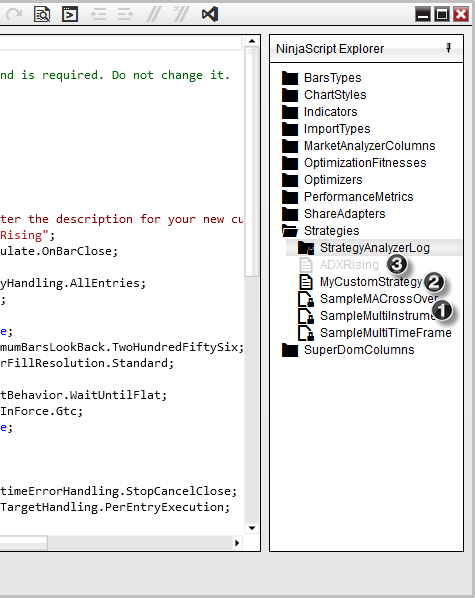
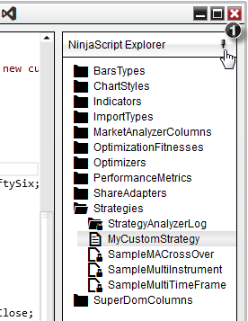
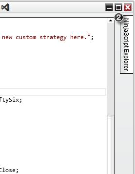
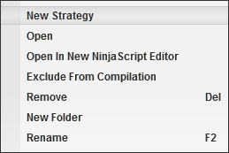
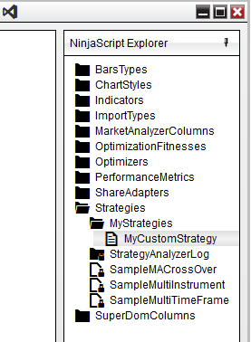
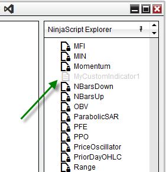
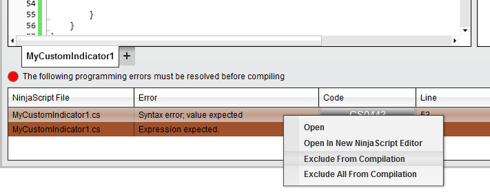

|
<< Click to Display Table of Contents >> NinjaScript Explorer |


|
NinjaScript Explorer
|
<< Click to Display Table of Contents >> NinjaScript Explorer |
|
The NinjaScript Explorer provides a Folder view of all the supported NinjaScript categories that can be developed in NinjaTrader.
 Understanding the NinjaScript Explorer display
Understanding the NinjaScript Explorer display
Folder DisplaysThe NinjaScript Explorer will organize each script installed on your system by type of NinjaScript object (Indicator, Strategy, SuperDOM Column, etc). Each folder will display the following scripts under each category:
 Pinning the NinjaScript Explorer1. By default the NinjaScript Explorer will be "pinned" to the right side of the NinjaScript editor, however it can be collapsed out of view by pressing the pin icon located at the top right of the explorer window.

2. Once the NinjaScript Explorer is collapsed, you can quickly bring it back in view simply by selecting the NinjaTrader Explorer tab located on the right side. Selecting the pin icon again will re-pin the NinjaScript Explorer to the NinjaScript Editor.

Right Click MenuRight clicking on an individual folder or script will give you a number of different menu items to help with the management of your custom scripts.

|
Opening an existing ScriptThere are two ways to open a script: 1. Double left mouse click on the script you wish to view or edit in the current window 2. Right mouse click on the script and select open to view or edit the script as a tab the current window, or select Open in NinjaScript Editor to open the script as a tab in a new window
Creating new scriptsRight clicking on a NinjaScript category and selecting New... will open the NinjaScript wizard allowing you to create new custom scripts.
Please see the Help Topic on the NinjaScript Wizard for more information.
Creating custom foldersThe NinjaScript Explorer gives you the flexibility to relocate and organize your custom scripts in a number of custom user defined folders.
•To create a new folder, simply right click on the NinjaScript folder category you wish to organize, select New Folder, and use your keyboard to type a user defined name to identify the folder.

Once you have created your new folder, using your mouse you can drag and drop any custom scripts of it's category under this folder.
Renaming scripts and foldersThere are two methods for renaming custom scripts:
1. Right mouse click on the script from the NinjaScript explorer and select Rename. 2. Select the desired script and press the F2 key on your keyboard
Renaming a script will automatically rename all relevant class names and all other required components.
Removing scripts and foldersThere are two methods for removing custom scripts from your system
1. Right mouse click on the script from the NinjaScript explorer and select Remove 2. Select the desired script and press the DEL key on your keyboard
Removing a script will completely delete the script from your system. This action cannot be undone.
Understanding Folders in the NinjaScript Editor and the File SystemWhen you create a folder in the NinjaScript Editor, it will also be created in the file system on your PC. For example, if you were to create a sub-folder named "MyScripts" in the existing "Indicators" folder, a sub-folder would also be created in the Documents\NinjaTrader 8\bin\Custom\Indicators folder. Once a sub-folder is created, scripts can be created or moved in that folder using the same processes outlined above.
|
 Excluding a script from compilation
Excluding a script from compilation
Ignoring a scriptThere may be situations where you have a custom script installed on your system that is preventing other scripts from compiling due to errors. The reason for this is that NinjaTrader will compile ALL custom NinjaScript files into a single DLL for performance reasons. If you find you have installed a script that is giving you errors that you cannot resolve, or you're currently in the middle of developing a script which is unable to compile, you can easily ignore these files from the compiler from the NinjaScript editor.
•To ignore a script, right click on script name and select Exclude From Compilation
When a script is ignored, it will be faded from the NinjaScript explorer to indicate that it will not be compiled.

To include this script for the next compilation, simply right click on the script from the NinjaScript Explorer and uncheck Exclude From Compilation
•Selecting Exclude From Compilation will ignore only the NinjaScript file selected •Selecting Exclude All From Compilation will exclude all the NinjaScript files currently with errors
 |